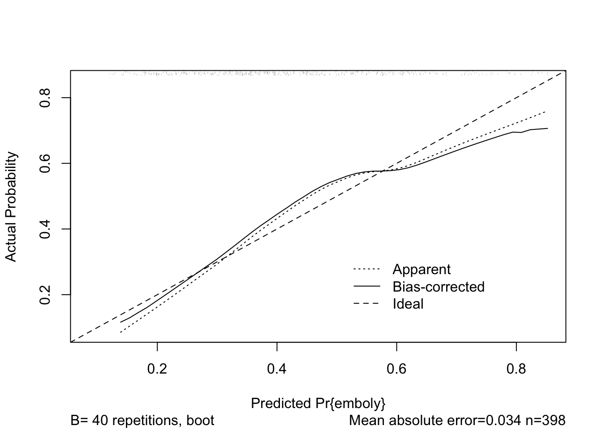
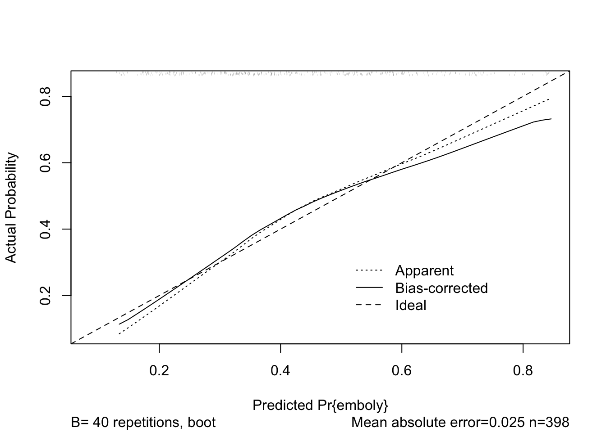

Last updated: 2018-02-07
Code version: 8122e6c
library(dplyr)
library(data.table)
library(magrittr)
library(epistats)
library(haven)Get data
pe <- haven::read_spss(fromParentDir("data/dataspss_final.sav"))View summary
str(pe)Classes 'tbl_df', 'tbl' and 'data.frame': 398 obs. of 26 variables:
$ lft : atomic 73 30 28 66 68 82 58 38 84 85 ...
..- attr(*, "format.spss")= chr "F8.2"
$ man : atomic 1 1 0 0 1 1 1 0 0 0 ...
..- attr(*, "format.spss")= chr "F8.2"
$ mal1 : atomic 1 0 0 0 0 0 1 1 0 0 ...
..- attr(*, "format.spss")= chr "F8.2"
$ ok3m : atomic 0 0 0 0 0 0 0 0 0 0 ...
..- attr(*, "format.spss")= chr "F8.2"
$ bnpare : atomic 0 0 0 0 0 0 0 0 0 0 ...
..- attr(*, "format.spss")= chr "F8.2"
$ famdvt : atomic 0 0 0 0 0 0 0 1 1 0 ...
..- attr(*, "format.spss")= chr "F8.2"
$ pdvt : atomic 0 0 0 0 0 0 0 0 0 0 ...
..- attr(*, "format.spss")= chr "F8.2"
$ ppe : atomic 0 0 1 0 0 0 0 0 0 0 ...
..- attr(*, "format.spss")= chr "F8.2"
$ dys : atomic 1 0 1 1 0 1 0 1 1 1 ...
..- attr(*, "format.spss")= chr "F8.2"
$ pleurchp: atomic 1 1 1 1 1 0 1 1 1 0 ...
..- attr(*, "format.spss")= chr "F8.2"
$ hoe : atomic 1 0 1 0 0 0 1 1 0 0 ...
..- attr(*, "format.spss")= chr "F8.2"
$ whee : atomic 0 0 0 0 0 0 0 0 0 0 ...
..- attr(*, "format.spss")= chr "F8.2"
$ bnpij : atomic 0 0 0 0 0 0 0 1 0 0 ...
..- attr(*, "format.spss")= chr "F8.2"
$ coll : atomic 0 0 0 0 0 0 0 0 0 0 ...
..- attr(*, "format.spss")= chr "F8.2"
$ palp : atomic 0 0 0 0 1 1 1 0 0 1 ...
..- attr(*, "format.spss")= chr "F8.2"
$ rok : atomic 1 0 1 0 0 0 1 0 0 0 ...
..- attr(*, "format.spss")= chr "F8.2"
$ tachp1 : atomic 20 16 24 18 14 28 14 14 36 20 ...
..- attr(*, "format.spss")= chr "F8.2"
$ wrij : atomic 0 0 0 0 0 0 0 0 0 0 ...
..- attr(*, "format.spss")= chr "F8.2"
$ crep : atomic 0 0 0 0 0 0 1 0 1 1 ...
..- attr(*, "format.spss")= chr "F8.2"
$ oed : atomic 0 0 0 0 0 1 0 0 0 1 ...
..- attr(*, "format.spss")= chr "F8.2"
$ dvts : atomic 0 0 0 0 0 0 0 0 0 0 ...
..- attr(*, "format.spss")= chr "F8.2"
$ echoafw : atomic 0 0 0 0 1 0 0 0 0 1 ...
..- attr(*, "format.spss")= chr "F8.2"
$ pco2 : atomic 34 41 40 25 29 ...
..- attr(*, "format.spss")= chr "F8.2"
$ po2 : atomic 24.8 22 23 24 26 ...
..- attr(*, "format.spss")= chr "F8.2"
$ emboly : atomic 0 0 0 0 0 0 0 0 0 0 ...
..- attr(*, "label")= chr "embolism present yes/no"
..- attr(*, "format.spss")= chr "F8.2"
$ xrayafw : atomic 0 1 0 0 0 1 0 0 1 1 ...
..- attr(*, "label")= chr "x-ray zoals gebruikt in artikel"
..- attr(*, "format.spss")= chr "F8.2"From the provided data dictionary, it’s clear that all variables are logical variables with 1 = true, 0 = false, except for age, which is continuous. Let’s set all variables to logical so R handles them correctly internally in the modeling.
logical_vars <- setdiff(colnames(pe), "lft")
pe %<>%
mutate_at(vars(logical_vars), funs(as.logical))summary(pe) lft man mal1 ok3m
Min. :18.00 Mode :logical Mode :logical Mode :logical
1st Qu.:42.00 FALSE:225 FALSE:305 FALSE:314
Median :57.00 TRUE :173 TRUE :93 TRUE :84
Mean :55.72
3rd Qu.:70.00
Max. :92.00
bnpare famdvt pdvt ppe
Mode :logical Mode :logical Mode :logical Mode :logical
FALSE:376 FALSE:357 FALSE:368 FALSE:367
TRUE :22 TRUE :41 TRUE :30 TRUE :31
dys pleurchp hoe whee
Mode :logical Mode :logical Mode :logical Mode :logical
FALSE:100 FALSE:97 FALSE:237 FALSE:338
TRUE :298 TRUE :301 TRUE :161 TRUE :60
bnpij coll palp rok
Mode :logical Mode :logical Mode :logical Mode :logical
FALSE:340 FALSE:367 FALSE:331 FALSE:270
TRUE :58 TRUE :31 TRUE :67 TRUE :128
tachp1 wrij crep oed
Mode:logical Mode :logical Mode :logical Mode :logical
TRUE:398 FALSE:335 FALSE:283 FALSE:341
TRUE :63 TRUE :115 TRUE :57
dvts echoafw pco2 po2
Mode :logical Mode :logical Mode:logical Mode:logical
FALSE:361 FALSE:306 TRUE:398 TRUE:398
TRUE :37 TRUE :92
emboly xrayafw
Mode :logical Mode :logical
FALSE:228 FALSE:239
TRUE :170 TRUE :159
Let’s create a null model
fit0 <- glm(emboly ~ 1, family = binomial, data = pe)Create univariate models for each predictor
library(purrr)
fits <- pe %>%
select(-emboly) %>%
map(function(x) glm(pe$emboly ~ x, family = binomial))Look at univariate predictors, grab coefficients table from the fits
coefs <- fits %>%
map(summary) %>%
map("coefficients")
coefs[[1]] Estimate Std. Error z value Pr(>|z|)
(Intercept) -1.51132464 0.358054110 -4.220939 2.432865e-05
x 0.02166026 0.006042937 3.584393 3.378634e-04betas <- fits %>%
map("coefficients") %>%
map_dbl(2)
cbind(beta = betas, OR = exp(betas)) beta OR
lft 0.02166026 1.0218965
man 0.12965966 1.1384409
mal1 0.58368697 1.7926357
ok3m 0.74115640 2.0983607
bnpare 0.70055070 2.0148620
famdvt -0.17003373 0.8436364
pdvt 0.90916122 2.4822396
ppe 0.10784611 1.1138763
dys 0.66568903 1.9458308
pleurchp -0.52806743 0.5897436
hoe 0.30763193 1.3602003
whee -0.46734051 0.6266667
bnpij 0.75377180 2.1250000
coll 1.28567733 3.6171171
palp 0.17348970 1.1894484
rok 0.06234313 1.0643275
tachp1 NA NA
wrij 0.53971463 1.7155172
crep 0.04389419 1.0448718
oed 0.05452084 1.0560345
dvts 0.62457368 1.8674497
echoafw 1.02300558 2.7815424
pco2 NA NA
po2 NA NA
xrayafw 0.77649617 2.1738421Some have missing values for their beta’s.
If we look at their distributions, we see that for each of these variables there is only 1 unique value in the dataset, so obviously we can’t create a model with these variables.
For simplicity, we can drop these from the data
pe %<>% select(-c(tachp1, pco2, po2))And from the betas, fits and coefs
betas <- betas[setdiff(names(fits), c("tachp1", "pco2", "po2"))]
fits <- fits[setdiff(names(fits), c("tachp1", "pco2", "po2"))]
coefs <- coefs[setdiff(names(fits), c("tachp1", "pco2", "po2"))]From the coefficient matrix we see that p-values are in row 2, column 4 (which 9s the 8th value of the matrix)
pvalues <- coefs %>%
map_dbl(8)
cbind(beta = betas, OR = exp(betas), pvalue = pvalues) beta OR pvalue
lft 0.02166026 1.0218965 3.378634e-04
man 0.12965966 1.1384409 5.256230e-01
mal1 0.58368697 1.7926357 1.448873e-02
ok3m 0.74115640 2.0983607 2.918751e-03
bnpare 0.70055070 2.0148620 1.162921e-01
famdvt -0.17003373 0.8436364 6.144201e-01
pdvt 0.90916122 2.4822396 2.083418e-02
ppe 0.10784611 1.1138763 7.742665e-01
dys 0.66568903 1.9458308 6.680347e-03
pleurchp -0.52806743 0.5897436 2.465972e-02
hoe 0.30763193 1.3602003 1.358857e-01
whee -0.46734051 0.6266667 1.130658e-01
bnpij 0.75377180 2.1250000 9.024038e-03
coll 1.28567733 3.6171171 1.702364e-03
palp 0.17348970 1.1894484 5.191875e-01
rok 0.06234313 1.0643275 7.735096e-01
wrij 0.53971463 1.7155172 5.067175e-02
crep 0.04389419 1.0448718 8.441483e-01
oed 0.05452084 1.0560345 8.501227e-01
dvts 0.62457368 1.8674497 7.321709e-02
echoafw 1.02300558 2.7815424 3.028347e-05
xrayafw 0.77649617 2.1738421 2.030338e-04Now we should start thinking a little.
We want our modeling strategy to mimick clinical practice, so we start out with the variables that are part of the first step in clinical practice: history taking
Define history variables:
hist_vars_all <- c("lft", "man", "mal1", "ok3m", "famdvt", "pdvt", "ppe",
"dys", "pleurchp", "hoe", "whee", "bnpij", "coll",
"palp", "rok")Create a model with all history variables
fith0 <- glm(reformulate(termlabels = hist_vars_all, response = "emboly"),
data = pe, family = "binomial")
summary(fith0)
Call:
glm(formula = reformulate(termlabels = hist_vars_all, response = "emboly"),
family = "binomial", data = pe)
Deviance Residuals:
Min 1Q Median 3Q Max
-2.1617 -0.9493 -0.6099 1.0865 2.0212
Coefficients:
Estimate Std. Error z value Pr(>|z|)
(Intercept) -2.448237 0.583236 -4.198 2.7e-05 ***
lft 0.021741 0.007173 3.031 0.00244 **
manTRUE 0.043112 0.226395 0.190 0.84897
mal1TRUE 0.233504 0.266774 0.875 0.38142
ok3mTRUE 0.860345 0.278909 3.085 0.00204 **
famdvtTRUE -0.282996 0.384485 -0.736 0.46171
pdvtTRUE 0.769263 0.453371 1.697 0.08974 .
ppeTRUE -0.044066 0.434789 -0.101 0.91927
dysTRUE 0.489834 0.276799 1.770 0.07679 .
pleurchpTRUE -0.150931 0.270171 -0.559 0.57640
hoeTRUE 0.560680 0.245028 2.288 0.02212 *
wheeTRUE -1.006436 0.346050 -2.908 0.00363 **
bnpijTRUE 0.740169 0.319452 2.317 0.02050 *
collTRUE 1.264872 0.454603 2.782 0.00540 **
palpTRUE 0.031778 0.309560 0.103 0.91824
rokTRUE 0.264305 0.250841 1.054 0.29203
---
Signif. codes: 0 '***' 0.001 '**' 0.01 '*' 0.05 '.' 0.1 ' ' 1
(Dispersion parameter for binomial family taken to be 1)
Null deviance: 543.26 on 397 degrees of freedom
Residual deviance: 481.12 on 382 degrees of freedom
AIC: 513.12
Number of Fisher Scoring iterations: 4Some are significant predictors, others aren’t.
Let’s compare likelihood ratio with the original model
anova(fit0, fith0, test = "Chisq")Analysis of Deviance Table
Model 1: emboly ~ 1
Model 2: emboly ~ lft + man + mal1 + ok3m + famdvt + pdvt + ppe + dys +
pleurchp + hoe + whee + bnpij + coll + palp + rok
Resid. Df Resid. Dev Df Deviance Pr(>Chi)
1 397 543.26
2 382 481.12 15 62.143 1.076e-07 ***
---
Signif. codes: 0 '***' 0.001 '**' 0.01 '*' 0.05 '.' 0.1 ' ' 1That is a big difference. Let’s set the likelihood of this model as a refence value, and try to reduce the number of determinants in the model
lh_history0 <- logLik(fith0)We’ll remove variables one by one, each time comparing the likelihood of the reduced model with this reference likelihood of the full history model
drop1(fith0, test = "Chisq")Single term deletions
Model:
emboly ~ lft + man + mal1 + ok3m + famdvt + pdvt + ppe + dys +
pleurchp + hoe + whee + bnpij + coll + palp + rok
Df Deviance AIC LRT Pr(>Chi)
<none> 481.12 513.12
lft 1 490.57 520.57 9.4457 0.002116 **
man 1 481.16 511.16 0.0363 0.848999
mal1 1 481.88 511.88 0.7641 0.382049
ok3m 1 490.84 520.84 9.7236 0.001819 **
famdvt 1 481.67 511.67 0.5487 0.458844
pdvt 1 484.08 514.08 2.9565 0.085534 .
ppe 1 481.13 511.13 0.0103 0.919196
dys 1 484.30 514.30 3.1835 0.074384 .
pleurchp 1 481.43 511.43 0.3116 0.576726
hoe 1 486.43 516.43 5.3133 0.021164 *
whee 1 490.09 520.09 8.9669 0.002749 **
bnpij 1 486.55 516.55 5.4308 0.019784 *
coll 1 489.50 519.50 8.3839 0.003786 **
palp 1 481.13 511.13 0.0105 0.918269
rok 1 482.23 512.23 1.1113 0.291803
---
Signif. codes: 0 '***' 0.001 '**' 0.01 '*' 0.05 '.' 0.1 ' ' 1Kick out palp, as it has the highest p-value
hist_vars <- setdiff(hist_vars_all, "palp")
fith1 <- glm(reformulate(termlabels = hist_vars, response = "emboly"),
data = pe, family = "binomial")
logLik(fith1)'log Lik.' -240.5651 (df=15)lh_diff <- logLik(fith1) - logLik(fith0)
lh_diff'log Lik.' -0.005264824 (df=15)The difference in log likelihoods is very small. Let’s look up the critical value for the chi-squared test on 1 degree of freedom, at a p-level of 0.10
qchisq(p = 0.9, df = 1)[1] 2.705543The difference between our reduced model is far less than this critical value, so we can safely go further with our reduced model.
For the next step, we will use the anova function in R, which will give us the p-value for the chi-squared test.
drop1(fith1, test = "Chisq")Single term deletions
Model:
emboly ~ lft + man + mal1 + ok3m + famdvt + pdvt + ppe + dys +
pleurchp + hoe + whee + bnpij + coll + rok
Df Deviance AIC LRT Pr(>Chi)
<none> 481.13 511.13
lft 1 490.74 518.74 9.6132 0.001932 **
man 1 481.16 509.16 0.0337 0.854394
mal1 1 481.89 509.89 0.7626 0.382513
ok3m 1 490.86 518.86 9.7279 0.001815 **
famdvt 1 481.67 509.67 0.5393 0.462702
pdvt 1 484.08 512.08 2.9544 0.085644 .
ppe 1 481.14 509.14 0.0110 0.916640
dys 1 484.33 512.33 3.1963 0.073807 .
pleurchp 1 481.44 509.44 0.3110 0.577054
hoe 1 486.43 514.43 5.3030 0.021288 *
whee 1 490.14 518.14 9.0104 0.002684 **
bnpij 1 486.56 514.56 5.4294 0.019800 *
coll 1 490.03 518.03 8.8955 0.002859 **
rok 1 482.25 510.25 1.1180 0.290356
---
Signif. codes: 0 '***' 0.001 '**' 0.01 '*' 0.05 '.' 0.1 ' ' 1hist_vars <- setdiff(hist_vars, "ppe")
fith2 <- glm(reformulate(termlabels = hist_vars, response = "emboly"),
data = pe, family = "binomial")
anova(fith2, fith0, test = "Chisq")Analysis of Deviance Table
Model 1: emboly ~ lft + man + mal1 + ok3m + famdvt + pdvt + dys + pleurchp +
hoe + whee + bnpij + coll + rok
Model 2: emboly ~ lft + man + mal1 + ok3m + famdvt + pdvt + ppe + dys +
pleurchp + hoe + whee + bnpij + coll + palp + rok
Resid. Df Resid. Dev Df Deviance Pr(>Chi)
1 384 481.14
2 382 481.12 2 0.021485 0.9893Keep going
drop1(fith2, test = "Chisq")Single term deletions
Model:
emboly ~ lft + man + mal1 + ok3m + famdvt + pdvt + dys + pleurchp +
hoe + whee + bnpij + coll + rok
Df Deviance AIC LRT Pr(>Chi)
<none> 481.14 509.14
lft 1 490.75 516.75 9.6110 0.001934 **
man 1 481.18 507.18 0.0347 0.852309
mal1 1 481.95 507.95 0.8041 0.369874
ok3m 1 490.87 516.87 9.7274 0.001815 **
famdvt 1 481.70 507.70 0.5617 0.453558
pdvt 1 484.16 510.16 3.0232 0.082080 .
dys 1 484.33 510.33 3.1855 0.074296 .
pleurchp 1 481.46 507.46 0.3157 0.574215
hoe 1 486.51 512.51 5.3676 0.020514 *
whee 1 490.15 516.15 9.0084 0.002687 **
bnpij 1 486.63 512.63 5.4896 0.019130 *
coll 1 490.08 516.08 8.9407 0.002789 **
rok 1 482.25 508.25 1.1074 0.292644
---
Signif. codes: 0 '***' 0.001 '**' 0.01 '*' 0.05 '.' 0.1 ' ' 1hist_vars <- setdiff(hist_vars, "man")
fith3 <- glm(reformulate(termlabels = hist_vars, response = "emboly"),
data = pe, family = "binomial")
anova(fith3, fith0, test = "Chisq")Analysis of Deviance Table
Model 1: emboly ~ lft + mal1 + ok3m + famdvt + pdvt + dys + pleurchp +
hoe + whee + bnpij + coll + rok
Model 2: emboly ~ lft + man + mal1 + ok3m + famdvt + pdvt + ppe + dys +
pleurchp + hoe + whee + bnpij + coll + palp + rok
Resid. Df Resid. Dev Df Deviance Pr(>Chi)
1 385 481.18
2 382 481.12 3 0.056145 0.9965Keep going
drop1(fith3, test = "Chisq")Single term deletions
Model:
emboly ~ lft + mal1 + ok3m + famdvt + pdvt + dys + pleurchp +
hoe + whee + bnpij + coll + rok
Df Deviance AIC LRT Pr(>Chi)
<none> 481.18 507.18
lft 1 490.77 514.77 9.5988 0.001947 **
mal1 1 482.01 506.01 0.8360 0.360537
ok3m 1 490.90 514.90 9.7207 0.001822 **
famdvt 1 481.77 505.77 0.5971 0.439673
pdvt 1 484.24 508.24 3.0675 0.079870 .
dys 1 484.37 508.37 3.1987 0.073698 .
pleurchp 1 481.49 505.49 0.3116 0.576708
hoe 1 486.53 510.53 5.3508 0.020713 *
whee 1 490.15 514.15 8.9742 0.002738 **
bnpij 1 486.69 510.69 5.5178 0.018824 *
coll 1 490.20 514.20 9.0264 0.002661 **
rok 1 482.36 506.36 1.1873 0.275869
---
Signif. codes: 0 '***' 0.001 '**' 0.01 '*' 0.05 '.' 0.1 ' ' 1hist_vars <- setdiff(hist_vars, "pleurchp")
fith4 <- glm(reformulate(termlabels = hist_vars, response = "emboly"),
data = pe, family = "binomial")
anova(fith4, fith0, test = "Chisq")Analysis of Deviance Table
Model 1: emboly ~ lft + mal1 + ok3m + famdvt + pdvt + dys + hoe + whee +
bnpij + coll + rok
Model 2: emboly ~ lft + man + mal1 + ok3m + famdvt + pdvt + ppe + dys +
pleurchp + hoe + whee + bnpij + coll + palp + rok
Resid. Df Resid. Dev Df Deviance Pr(>Chi)
1 386 481.49
2 382 481.12 4 0.36773 0.985Keep going
drop1(fith4, test = "Chisq")Single term deletions
Model:
emboly ~ lft + mal1 + ok3m + famdvt + pdvt + dys + hoe + whee +
bnpij + coll + rok
Df Deviance AIC LRT Pr(>Chi)
<none> 481.49 505.49
lft 1 492.74 514.74 11.2501 0.0007962 ***
mal1 1 482.37 504.37 0.8828 0.3474319
ok3m 1 491.15 513.15 9.6665 0.0018766 **
famdvt 1 482.09 504.09 0.6000 0.4385722
pdvt 1 484.46 506.46 2.9745 0.0845859 .
dys 1 485.02 507.02 3.5375 0.0599960 .
hoe 1 486.98 508.98 5.4913 0.0191108 *
whee 1 490.57 512.57 9.0840 0.0025785 **
bnpij 1 487.05 509.05 5.5617 0.0183579 *
coll 1 490.98 512.98 9.4943 0.0020611 **
rok 1 482.61 504.61 1.1194 0.2900478
---
Signif. codes: 0 '***' 0.001 '**' 0.01 '*' 0.05 '.' 0.1 ' ' 1hist_vars <- setdiff(hist_vars, "famdvt")
fith5 <- glm(reformulate(termlabels = hist_vars, response = "emboly"),
data = pe, family = "binomial")
anova(fith5, fith0, test = "Chisq")Analysis of Deviance Table
Model 1: emboly ~ lft + mal1 + ok3m + pdvt + dys + hoe + whee + bnpij +
coll + rok
Model 2: emboly ~ lft + man + mal1 + ok3m + famdvt + pdvt + ppe + dys +
pleurchp + hoe + whee + bnpij + coll + palp + rok
Resid. Df Resid. Dev Df Deviance Pr(>Chi)
1 387 482.09
2 382 481.12 5 0.96775 0.9651Keep going
drop1(fith5, test = "Chisq")Single term deletions
Model:
emboly ~ lft + mal1 + ok3m + pdvt + dys + hoe + whee + bnpij +
coll + rok
Df Deviance AIC LRT Pr(>Chi)
<none> 482.09 504.09
lft 1 493.60 513.60 11.5123 0.0006914 ***
mal1 1 482.91 502.91 0.8240 0.3640123
ok3m 1 491.95 511.95 9.8653 0.0016842 **
pdvt 1 484.83 504.83 2.7409 0.0978112 .
dys 1 485.60 505.60 3.5119 0.0609307 .
hoe 1 487.46 507.46 5.3711 0.0204734 *
whee 1 491.63 511.63 9.5427 0.0020075 **
bnpij 1 487.32 507.32 5.2360 0.0221239 *
coll 1 491.69 511.69 9.6037 0.0019419 **
rok 1 483.07 503.07 0.9849 0.3210038
---
Signif. codes: 0 '***' 0.001 '**' 0.01 '*' 0.05 '.' 0.1 ' ' 1hist_vars <- setdiff(hist_vars, "mal1")
fith6 <- glm(reformulate(termlabels = hist_vars, response = "emboly"),
data = pe, family = "binomial")
anova(fith6, fith0, test = "Chisq")Analysis of Deviance Table
Model 1: emboly ~ lft + ok3m + pdvt + dys + hoe + whee + bnpij + coll +
rok
Model 2: emboly ~ lft + man + mal1 + ok3m + famdvt + pdvt + ppe + dys +
pleurchp + hoe + whee + bnpij + coll + palp + rok
Resid. Df Resid. Dev Df Deviance Pr(>Chi)
1 388 482.91
2 382 481.12 6 1.7917 0.9378Keep going
drop1(fith6, test = "Chisq")Single term deletions
Model:
emboly ~ lft + ok3m + pdvt + dys + hoe + whee + bnpij + coll +
rok
Df Deviance AIC LRT Pr(>Chi)
<none> 482.91 502.91
lft 1 495.25 513.25 12.3402 0.0004433 ***
ok3m 1 494.13 512.13 11.2178 0.0008102 ***
pdvt 1 485.62 503.62 2.7069 0.0999165 .
dys 1 486.57 504.57 3.6625 0.0556503 .
hoe 1 489.09 507.09 6.1819 0.0129067 *
whee 1 492.90 510.90 9.9864 0.0015770 **
bnpij 1 488.21 506.21 5.2987 0.0213412 *
coll 1 492.82 510.82 9.9086 0.0016451 **
rok 1 483.85 501.85 0.9374 0.3329442
---
Signif. codes: 0 '***' 0.001 '**' 0.01 '*' 0.05 '.' 0.1 ' ' 1hist_vars <- setdiff(hist_vars, "rok")
fith7 <- glm(reformulate(termlabels = hist_vars, response = "emboly"),
data = pe, family = "binomial")
fith7 %>% anova(., fith0, test = "Chisq")Analysis of Deviance Table
Model 1: emboly ~ lft + ok3m + pdvt + dys + hoe + whee + bnpij + coll
Model 2: emboly ~ lft + man + mal1 + ok3m + famdvt + pdvt + ppe + dys +
pleurchp + hoe + whee + bnpij + coll + palp + rok
Resid. Df Resid. Dev Df Deviance Pr(>Chi)
1 389 483.85
2 382 481.12 7 2.7292 0.9089Keep going
drop1(fith7, test = "Chisq")Single term deletions
Model:
emboly ~ lft + ok3m + pdvt + dys + hoe + whee + bnpij + coll
Df Deviance AIC LRT Pr(>Chi)
<none> 483.85 501.85
lft 1 495.35 511.35 11.5001 0.0006959 ***
ok3m 1 495.06 511.06 11.2072 0.0008148 ***
pdvt 1 486.73 502.73 2.8768 0.0898646 .
dys 1 487.36 503.36 3.5137 0.0608624 .
hoe 1 490.90 506.90 7.0504 0.0079249 **
whee 1 494.41 510.41 10.5574 0.0011572 **
bnpij 1 489.18 505.18 5.3267 0.0210012 *
coll 1 493.37 509.37 9.5201 0.0020324 **
---
Signif. codes: 0 '***' 0.001 '**' 0.01 '*' 0.05 '.' 0.1 ' ' 1hist_vars <- setdiff(hist_vars, "pdvt")
fith8 <- glm(reformulate(termlabels = hist_vars, response = "emboly"),
data = pe, family = "binomial")
fith8 %>% anova(., fith0, test = "Chisq")Analysis of Deviance Table
Model 1: emboly ~ lft + ok3m + dys + hoe + whee + bnpij + coll
Model 2: emboly ~ lft + man + mal1 + ok3m + famdvt + pdvt + ppe + dys +
pleurchp + hoe + whee + bnpij + coll + palp + rok
Resid. Df Resid. Dev Df Deviance Pr(>Chi)
1 390 486.73
2 382 481.12 8 5.606 0.6913Keep going
drop1(fith8, test = "Chisq")Single term deletions
Model:
emboly ~ lft + ok3m + dys + hoe + whee + bnpij + coll
Df Deviance AIC LRT Pr(>Chi)
<none> 486.73 502.73
lft 1 498.66 512.66 11.9373 0.0005502 ***
ok3m 1 497.96 511.96 11.2371 0.0008018 ***
dys 1 490.47 504.47 3.7438 0.0530033 .
hoe 1 493.94 507.94 7.2161 0.0072252 **
whee 1 496.45 510.45 9.7262 0.0018166 **
bnpij 1 494.67 508.67 7.9414 0.0048317 **
coll 1 496.27 510.27 9.5437 0.0020064 **
---
Signif. codes: 0 '***' 0.001 '**' 0.01 '*' 0.05 '.' 0.1 ' ' 1hist_vars <- setdiff(hist_vars, "dys")
fith9 <- glm(reformulate(termlabels = hist_vars, response = "emboly"),
data = pe, family = "binomial")
fith9 %>% anova(., fith0, test = "Chisq")Analysis of Deviance Table
Model 1: emboly ~ lft + ok3m + hoe + whee + bnpij + coll
Model 2: emboly ~ lft + man + mal1 + ok3m + famdvt + pdvt + ppe + dys +
pleurchp + hoe + whee + bnpij + coll + palp + rok
Resid. Df Resid. Dev Df Deviance Pr(>Chi)
1 391 490.47
2 382 481.12 9 9.3498 0.4056Keep going
drop1(fith9, test = "Chisq")Single term deletions
Model:
emboly ~ lft + ok3m + hoe + whee + bnpij + coll
Df Deviance AIC LRT Pr(>Chi)
<none> 490.47 504.47
lft 1 504.72 516.72 14.2493 0.0001601 ***
ok3m 1 500.78 512.78 10.3073 0.0013250 **
hoe 1 499.61 511.61 9.1416 0.0024986 **
whee 1 499.03 511.03 8.5556 0.0034446 **
bnpij 1 499.19 511.19 8.7196 0.0031480 **
coll 1 501.44 513.44 10.9686 0.0009267 ***
---
Signif. codes: 0 '***' 0.001 '**' 0.01 '*' 0.05 '.' 0.1 ' ' 1hist_vars <- setdiff(hist_vars, "whee")
fith10 <- glm(reformulate(termlabels = hist_vars, response = "emboly"),
data = pe, family = "binomial")
fith10 %>% anova(., fith0, test = "Chisq")Analysis of Deviance Table
Model 1: emboly ~ lft + ok3m + hoe + bnpij + coll
Model 2: emboly ~ lft + man + mal1 + ok3m + famdvt + pdvt + ppe + dys +
pleurchp + hoe + whee + bnpij + coll + palp + rok
Resid. Df Resid. Dev Df Deviance Pr(>Chi)
1 392 499.03
2 382 481.12 10 17.905 0.05658 .
---
Signif. codes: 0 '***' 0.001 '**' 0.01 '*' 0.05 '.' 0.1 ' ' 1Now the model is worse than the model with all history variables at a level of 0.056. Keeping 0.10 as a cut-off, we will stick with fith9
fith <- fith9
hist_vars <- union(hist_vars, "whee")Lets see how wel this model fits the data
To do this, we will use the package rms from Frank Harrell, we must re-fit the model to use the functions from this package
library(rms)
fith_rms <- lrm(formula = fith$formula, data = pe, x = T, y = T)
fith_rmsLogistic Regression Model
lrm(formula = fith$formula, data = pe, x = T, y = T)
Model Likelihood Discrimination Rank Discrim.
Ratio Test Indexes Indexes
Obs 398 LR chi2 52.79 R2 0.167 C 0.709
FALSE 228 d.f. 6 g 0.907 Dxy 0.418
TRUE 170 Pr(> chi2) <0.0001 gr 2.478 gamma 0.419
max |deriv| 1e-09 gp 0.200 tau-a 0.205
Brier 0.214
Coef S.E. Wald Z Pr(>|Z|)
Intercept -2.2323 0.4083 -5.47 <0.0001
lft 0.0243 0.0066 3.70 0.0002
ok3m 0.8589 0.2702 3.18 0.0015
hoe 0.6988 0.2341 2.99 0.0028
whee -0.9486 0.3339 -2.84 0.0045
bnpij 0.8846 0.3028 2.92 0.0035
coll 1.3659 0.4333 3.15 0.0016
As we see, the C-index (AUC) is 0.709
Validate with bootstrapping
fith_valid <- validate(fith_rms)
fith_valid index.orig training test optimism index.corrected n
Dxy 0.4183 0.4526 0.3998 0.0528 0.3655 40
R2 0.1668 0.1984 0.1525 0.0459 0.1210 40
Intercept 0.0000 0.0000 -0.0452 0.0452 -0.0452 40
Slope 1.0000 1.0000 0.8456 0.1544 0.8456 40
Emax 0.0000 0.0000 0.0450 0.0450 0.0450 40
D 0.1301 0.1576 0.1181 0.0395 0.0906 40
U -0.0050 -0.0050 0.0032 -0.0082 0.0032 40
Q 0.1352 0.1626 0.1148 0.0478 0.0874 40
B 0.2143 0.2075 0.2184 -0.0109 0.2253 40
g 0.9073 1.0153 0.8560 0.1593 0.7480 40
gp 0.2004 0.2170 0.1908 0.0262 0.1742 40The corrected AUC is
(1+fith_valid["Dxy", "index.corrected"]) / 2[1] 0.6827409A little lower
Get calibration plot (this also uses bootstrapping to get a bias-corrected calibration curve)
fith_calib <- calibrate(fith_rms)
plot(fith_calib)
n=398 Mean absolute error=0.034 Mean squared error=0.00176
0.9 Quantile of absolute error=0.056Calibration is not perfect, with a some underprediction in the higher predicted risk range
Define physical examination variables
pe_vars_all <- c("wrij", "crep", "oed", "dvts")
pe_vars <- union(hist_vars, pe_vars_all)
fitp0 <- glm(reformulate(pe_vars, "emboly"), data = pe, family = "binomial")
summary(fitp0)
Call:
glm(formula = reformulate(pe_vars, "emboly"), family = "binomial",
data = pe)
Deviance Residuals:
Min 1Q Median 3Q Max
-1.9360 -0.9455 -0.6612 1.1007 1.8825
Coefficients:
Estimate Std. Error z value Pr(>|z|)
(Intercept) -2.338290 0.414420 -5.642 1.68e-08 ***
lft 0.025538 0.006939 3.680 0.000233 ***
ok3mTRUE 0.820520 0.274385 2.990 0.002786 **
hoeTRUE 0.716895 0.236270 3.034 0.002412 **
bnpijTRUE 0.845933 0.336866 2.511 0.012033 *
collTRUE 1.432531 0.440018 3.256 0.001131 **
wheeTRUE -0.886702 0.337017 -2.631 0.008513 **
wrijTRUE 0.516631 0.299877 1.723 0.084923 .
crepTRUE -0.141142 0.254704 -0.554 0.579483
oedTRUE -0.233460 0.346450 -0.674 0.500398
dvtsTRUE 0.219226 0.445129 0.493 0.622366
---
Signif. codes: 0 '***' 0.001 '**' 0.01 '*' 0.05 '.' 0.1 ' ' 1
(Dispersion parameter for binomial family taken to be 1)
Null deviance: 543.26 on 397 degrees of freedom
Residual deviance: 486.13 on 387 degrees of freedom
AIC: 508.13
Number of Fisher Scoring iterations: 4anova(fith, fitp0, test = "Chisq")Analysis of Deviance Table
Model 1: emboly ~ lft + ok3m + hoe + whee + bnpij + coll
Model 2: emboly ~ lft + ok3m + hoe + bnpij + coll + whee + wrij + crep +
oed + dvts
Resid. Df Resid. Dev Df Deviance Pr(>Chi)
1 391 490.47
2 387 486.13 4 4.3348 0.3626This model is not much better than the model with only variables from history
Maybe if we reduce the number of included physical examination variables, we can get a significant improvement of the likelihood (as the degrees of freedom for the chi-square distribution will go down)
If the fit with all physical examination variables were preferrable over the parsimonious history model, we would compare each reduced physical examination model with the model with all physical examination variables. However, now we will keep comparing with the final history model.
drop1(fitp0, test = "Chisq")Single term deletions
Model:
emboly ~ lft + ok3m + hoe + bnpij + coll + whee + wrij + crep +
oed + dvts
Df Deviance AIC LRT Pr(>Chi)
<none> 486.13 508.13
lft 1 500.26 520.26 14.1234 0.0001712 ***
ok3m 1 495.20 515.20 9.0690 0.0025998 **
hoe 1 495.59 515.59 9.4578 0.0021025 **
bnpij 1 492.49 512.49 6.3541 0.0117110 *
coll 1 497.81 517.81 11.6729 0.0006342 ***
whee 1 493.44 513.44 7.3063 0.0068711 **
wrij 1 489.10 509.10 2.9699 0.0848256 .
crep 1 486.44 506.44 0.3081 0.5788696
oed 1 486.59 506.59 0.4579 0.4986292
dvts 1 486.38 506.38 0.2423 0.6225341
---
Signif. codes: 0 '***' 0.001 '**' 0.01 '*' 0.05 '.' 0.1 ' ' 1pe_vars <- setdiff(pe_vars, "dvts")
fitp1 <- glm(reformulate(termlabels = pe_vars, response = "emboly"),
data = pe, family = "binomial")
fitp1 %>% anova(., fith, test = "Chisq")Analysis of Deviance Table
Model 1: emboly ~ lft + ok3m + hoe + bnpij + coll + whee + wrij + crep +
oed
Model 2: emboly ~ lft + ok3m + hoe + whee + bnpij + coll
Resid. Df Resid. Dev Df Deviance Pr(>Chi)
1 388 486.38
2 391 490.47 -3 -4.0925 0.2516drop1(fitp1, test = "Chisq")Single term deletions
Model:
emboly ~ lft + ok3m + hoe + bnpij + coll + whee + wrij + crep +
oed
Df Deviance AIC LRT Pr(>Chi)
<none> 486.38 506.38
lft 1 500.85 518.85 14.4761 0.0001419 ***
ok3m 1 495.68 513.68 9.3021 0.0022889 **
hoe 1 495.67 513.67 9.2956 0.0022971 **
bnpij 1 495.07 513.07 8.6922 0.0031958 **
coll 1 498.07 516.07 11.6918 0.0006278 ***
whee 1 493.74 511.74 7.3616 0.0066630 **
wrij 1 489.36 507.36 2.9868 0.0839444 .
crep 1 486.76 504.76 0.3825 0.5362512
oed 1 486.67 504.67 0.2963 0.5861831
---
Signif. codes: 0 '***' 0.001 '**' 0.01 '*' 0.05 '.' 0.1 ' ' 1pe_vars <- setdiff(pe_vars, "oed")
fitp2 <- glm(reformulate(termlabels = pe_vars, response = "emboly"),
data = pe, family = "binomial")
fitp2 %>% anova(., fith, test = "Chisq")Analysis of Deviance Table
Model 1: emboly ~ lft + ok3m + hoe + bnpij + coll + whee + wrij + crep
Model 2: emboly ~ lft + ok3m + hoe + whee + bnpij + coll
Resid. Df Resid. Dev Df Deviance Pr(>Chi)
1 389 486.67
2 391 490.47 -2 -3.7962 0.1499drop1(fitp2, test = "Chisq")Single term deletions
Model:
emboly ~ lft + ok3m + hoe + bnpij + coll + whee + wrij + crep
Df Deviance AIC LRT Pr(>Chi)
<none> 486.67 504.67
lft 1 500.86 516.86 14.1894 0.0001653 ***
ok3m 1 496.15 512.15 9.4805 0.0020767 **
hoe 1 495.93 511.93 9.2595 0.0023428 **
bnpij 1 495.07 511.07 8.4013 0.0037495 **
coll 1 498.59 514.59 11.9182 0.0005559 ***
whee 1 494.20 510.20 7.5271 0.0060779 **
wrij 1 489.83 505.83 3.1530 0.0757887 .
crep 1 487.14 503.14 0.4693 0.4933272
---
Signif. codes: 0 '***' 0.001 '**' 0.01 '*' 0.05 '.' 0.1 ' ' 1pe_vars <- setdiff(pe_vars, "crep")
fitp3 <- glm(reformulate(termlabels = pe_vars, response = "emboly"),
data = pe, family = "binomial")
fitp3 %>% anova(., fith, test = "Chisq")Analysis of Deviance Table
Model 1: emboly ~ lft + ok3m + hoe + bnpij + coll + whee + wrij
Model 2: emboly ~ lft + ok3m + hoe + whee + bnpij + coll
Resid. Df Resid. Dev Df Deviance Pr(>Chi)
1 390 487.14
2 391 490.47 -1 -3.3269 0.06816 .
---
Signif. codes: 0 '***' 0.001 '**' 0.01 '*' 0.05 '.' 0.1 ' ' 1So we keep 2 variables from physical examination, put crep back in
fitp <- fitp2
pe_vars <- union(pe_vars, "crep")Do validation and calibration as for the history only model
fitp_rms <- lrm(fitp$formula, data = pe, x = T, y = T)
fitp_rmsLogistic Regression Model
lrm(formula = fitp$formula, data = pe, x = T, y = T)
Model Likelihood Discrimination Rank Discrim.
Ratio Test Indexes Indexes
Obs 398 LR chi2 56.59 R2 0.178 C 0.716
FALSE 228 d.f. 8 g 0.944 Dxy 0.432
TRUE 170 Pr(> chi2) <0.0001 gr 2.571 gamma 0.432
max |deriv| 3e-09 gp 0.207 tau-a 0.212
Brier 0.212
Coef S.E. Wald Z Pr(>|Z|)
Intercept -2.3273 0.4130 -5.64 <0.0001
lft 0.0252 0.0068 3.69 0.0002
ok3m 0.8340 0.2731 3.05 0.0023
hoe 0.7068 0.2353 3.00 0.0027
bnpij 0.8741 0.3046 2.87 0.0041
coll 1.4381 0.4378 3.29 0.0010
whee -0.8985 0.3366 -2.67 0.0076
wrij 0.5311 0.2992 1.78 0.0759
crep -0.1716 0.2510 -0.68 0.4943
fitp_valid <- validate(fitp_rms)
fitp_valid index.orig training test optimism index.corrected n
Dxy 0.4317 0.4634 0.4064 0.0570 0.3747 40
R2 0.1780 0.2110 0.1581 0.0529 0.1251 40
Intercept 0.0000 0.0000 -0.0165 0.0165 -0.0165 40
Slope 1.0000 1.0000 0.8453 0.1547 0.8453 40
Emax 0.0000 0.0000 0.0402 0.0402 0.0402 40
D 0.1397 0.1689 0.1228 0.0461 0.0936 40
U -0.0050 -0.0050 0.0051 -0.0101 0.0051 40
Q 0.1447 0.1739 0.1177 0.0562 0.0885 40
B 0.2118 0.2045 0.2172 -0.0127 0.2245 40
g 0.9441 1.0566 0.8719 0.1847 0.7595 40
gp 0.2075 0.2230 0.1936 0.0294 0.1781 40(1+fitp_valid["Dxy", "index.corrected"]) / 2[1] 0.6873485fitp_calib <- calibrate(fitp_rms)
plot(fitp_calib)
n=398 Mean absolute error=0.025 Mean squared error=0.00108
0.9 Quantile of absolute error=0.05The bias-corrected AUC is actually worse than that of the fit with only history variables
Let’s add these one by one, since there are only two
fitxray <- glm(reformulate(c(pe_vars, "xrayafw"), "emboly"), data = pe,
family = "binomial")
fitus <- glm(reformulate(c(pe_vars, "echoafw"), "emboly"), data = pe,
family = "binomial")
anova(fitxray, fitus, test = "Chisq")Analysis of Deviance Table
Model 1: emboly ~ lft + ok3m + hoe + bnpij + coll + whee + wrij + crep +
xrayafw
Model 2: emboly ~ lft + ok3m + hoe + bnpij + coll + whee + wrij + crep +
echoafw
Resid. Df Resid. Dev Df Deviance Pr(>Chi)
1 388 476.47
2 388 474.14 0 2.3317 If we model them separately, we can no longer use the likelihood ratio test to compare them, since the models are not nested.
Let’s create a model with both of them.
fitr0 <- glm(reformulate(c(pe_vars, "xrayafw", "echoafw"), "emboly"),
data = pe, family = "binomial")
anova(fitr0, fitxray, fitus, test = "Chisq")Analysis of Deviance Table
Model 1: emboly ~ lft + ok3m + hoe + bnpij + coll + whee + wrij + crep +
xrayafw + echoafw
Model 2: emboly ~ lft + ok3m + hoe + bnpij + coll + whee + wrij + crep +
xrayafw
Model 3: emboly ~ lft + ok3m + hoe + bnpij + coll + whee + wrij + crep +
echoafw
Resid. Df Resid. Dev Df Deviance Pr(>Chi)
1 387 464.49
2 388 476.47 -1 -11.9801 0.0005377 ***
3 388 474.14 0 2.3317
---
Signif. codes: 0 '***' 0.001 '**' 0.01 '*' 0.05 '.' 0.1 ' ' 1logLik(fitr0)'log Lik.' -232.2463 (df=11)logLik(fitxray)'log Lik.' -238.2363 (df=10)logLik(fitus)'log Lik.' -237.0705 (df=10)The model with only history and physical examination in it seems to perform best. So that will be our final model.
sessionInfo()R version 3.4.3 (2017-11-30)
Platform: x86_64-apple-darwin15.6.0 (64-bit)
Running under: macOS Sierra 10.12.6
Matrix products: default
BLAS: /Library/Frameworks/R.framework/Versions/3.4/Resources/lib/libRblas.0.dylib
LAPACK: /Library/Frameworks/R.framework/Versions/3.4/Resources/lib/libRlapack.dylib
locale:
[1] en_US.UTF-8/en_US.UTF-8/en_US.UTF-8/C/en_US.UTF-8/en_US.UTF-8
attached base packages:
[1] stats graphics grDevices utils datasets methods base
other attached packages:
[1] rms_5.1-2 SparseM_1.77 Hmisc_4.1-1
[4] ggplot2_2.2.1 Formula_1.2-2 survival_2.41-3
[7] lattice_0.20-35 purrr_0.2.4 bindrcpp_0.2
[10] haven_1.1.1 epistats_0.1.0 magrittr_1.5
[13] data.table_1.10.4-3 dplyr_0.7.4
loaded via a namespace (and not attached):
[1] zoo_1.8-1 splines_3.4.3 colorspace_1.3-2
[4] htmltools_0.3.6 yaml_2.1.16 base64enc_0.1-3
[7] rlang_0.1.6 pillar_1.1.0 foreign_0.8-69
[10] glue_1.2.0 RColorBrewer_1.1-2 multcomp_1.4-8
[13] bindr_0.1 plyr_1.8.4 stringr_1.2.0
[16] MatrixModels_0.4-1 munsell_0.4.3 gtable_0.2.0
[19] mvtnorm_1.0-6 htmlwidgets_0.9 codetools_0.2-15
[22] evaluate_0.10.1 latticeExtra_0.6-28 knitr_1.18
[25] forcats_0.2.0 quantreg_5.34 htmlTable_1.11.2
[28] TH.data_1.0-8 Rcpp_0.12.14 acepack_1.4.1
[31] readr_1.1.1 scales_0.5.0 backports_1.1.2
[34] checkmate_1.8.5 gridExtra_2.3 hms_0.4.0
[37] digest_0.6.14 polspline_1.1.12 stringi_1.1.6
[40] grid_3.4.3 rprojroot_1.2 tools_3.4.3
[43] sandwich_2.4-0 lazyeval_0.2.1 tibble_1.4.1
[46] cluster_2.0.6 pkgconfig_2.0.1 MASS_7.3-47
[49] Matrix_1.2-12 assertthat_0.2.0 rmarkdown_1.8
[52] rstudioapi_0.7 R6_2.2.2 rpart_4.1-11
[55] nlme_3.1-131 nnet_7.3-12 git2r_0.20.0
[58] compiler_3.4.3 This R Markdown site was created with workflowr